CONTENTS
This package provides a GUI shell implemented via the SWT toolkit that comes with eclipse. The default JavaIOC package overview document gives brief instructions for starting the swtshell. If you want to communicate with another javaIOC then the option "-server server/beforeStartCAV4.txt" must be given when the javaIOC is started. If you want to communicate with a V3 EPICS IOC then the option "-server server/beforeStartCAV3.txt" must be given.
The following window appears when swtshell is started:
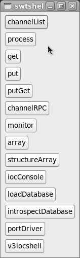
The window has the following buttons:
NOTE: After text is typed into any text input window, the enter key must be pressed.
The channelList, get, put, process,putGet,channelRPC, monitor,array, and structureArray buttons each start a new window. Each window provides the ability to connect to a PV (Process Variable).
The window gets data from a local or remote IOC. The data is accessed via Channel Access, which can be either V3 or V4 channelAccess
For EPICS V3 Channel Access only the following data can be accessed:
See package org.epics.ioc.caV3 for details about caV3.
This obtains a list of a subset, selected by a regular expression, of the records in a javaIOC. A name can be selected and dropped into a connect window descibed in the next sub-section.
When channelList is selected from the main swtshell window the following window appears.
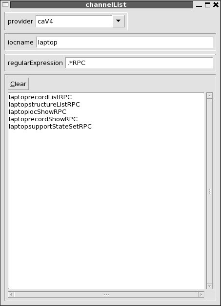
The provider is normally CAV4 but could also be selected as local, i.e. the javaIOC that is in the same process as swtshell. The icname must be specified. A regular expression selects the set of records to list. The above example selects all records with names ending in "RPC". The default regular expression ".*" selects all records. When the enter key is pressed in the regularExpression, the list of channels is read via channel access.
The implementation issues a channel access putGet request to get the channel list It requres that the javaIOC have an RPC record ( RPC records are descibed below) that provides the record list. The record must be named "${IOCNAME}recordListRPC" where IOCNAME is the name of the javaIOC.
The process,get, put, putGet, channelRPC, monitor, and array windows all have a connect button. When this button is pressed the following window appears:
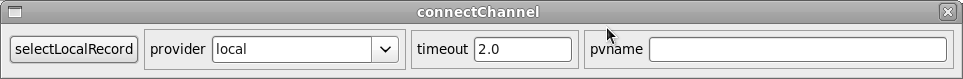
If selectLocalRecord is clicked then a list of all the records in the local javaIOC is presented. When a record is selected a request is made to create a channel connected to the record and control returned to the window that has the connect button.
For a remote record a pvname can be entered. Note that the record name can be obtained from the channelList described in the previous sub-section. When return is clicked a request is made to create a channel to the selected record and control returned to the window that has the connect button.
The get, put, putGet and monotor windows all have a createRequest button, which can activated after connecting to a channel. createRequest allows you to select an arbitarary set of fields from the PVRecord to which the channel is connected. All also show a text window with the curent request string displayed. This text window can be modified or the createRequest button can be clicked to use introspection to select a set of fields.
When the createRequest button is pressed the following window appears:
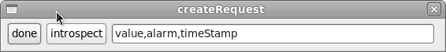
Again the text window can be edited. If options are provided for fields thety must be manually entered.
When the introspect button is clicked a window like the following appears. The details depend on the record structure.
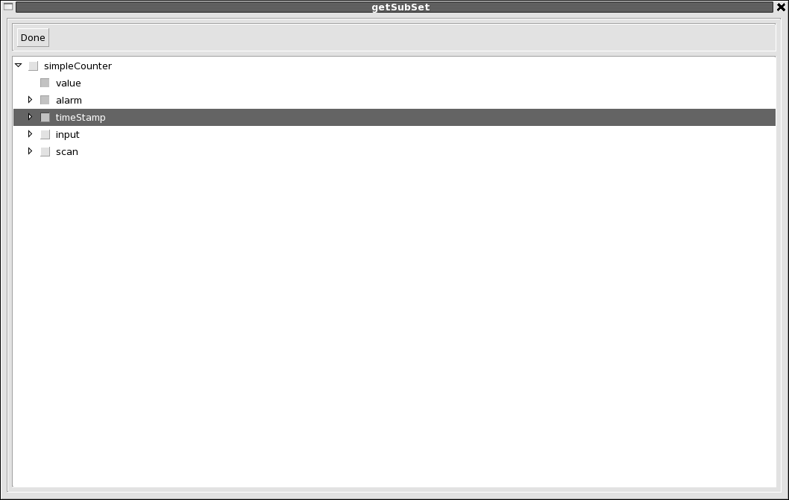
This window allows the user to select an arbitrary set of fields from the PVRecord to which the channel is attached. When the arrow for a structure field is clicked the fields for that structure appear. A field is selected by clicking the button next to the field name. If a structure field is selected the entire structure is selected.
A request can also be specified via a text window and then clicking the request button. The rules for specifying the request via a text string are specified by org.epics.pvData.pvCopy See the package overview for details.
The following window appears when the process button is pushed:
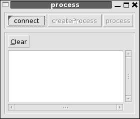
The connect button is for connecting and disconnecting to/from a channel. The createProcess button is for creating and destroying a channelProcess request. The process button sends a process request to the channel access server.
Clicking the get button of the swtshell window creates the following window. The following shows the window after connecting to a channel and clicking createGet.:
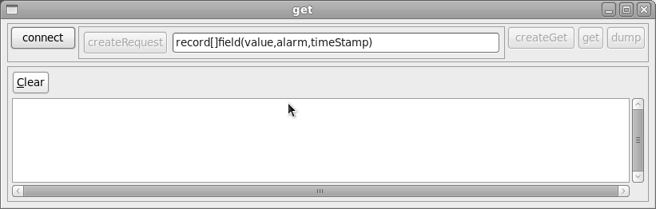
The first row has the following widgets:
The following window appears when the put button is pushed:
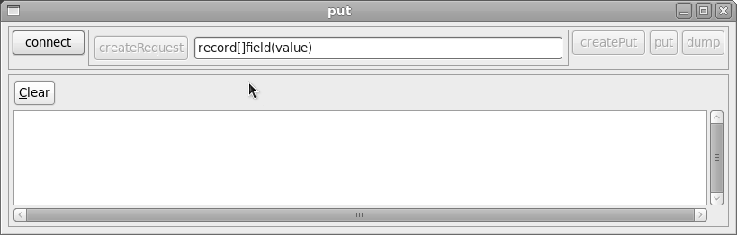
Except for put the top row is just like get.
When the put button is clicked then what happens depends of how many fields where selected from the PVRecord. If only a single scalar or array field was selected, then a text entry box apppears. When a value is entered and the return key is pressed then this value is sent via channel access.
If more than a single scalar or array field was selected then when put is clicked a window appears that allows the user to provide values to each scalar or array field of the selected fields. This window is:
This display allows the user to give values to any of the scalar or array fields.
If a primitive or array of primitives is selected then when edit is clicked the following happens:
When done is clicked the modified fields are sent to the channel access server and written to the PVRecord.
The following window appears when the putGet button is pushed. It is similar to get and put except that both a putRequest and a getRequest must be specified.
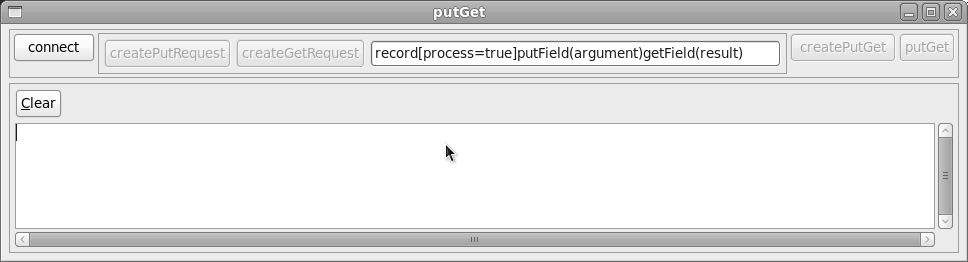
A typical use of putGet is to issue a remote procedure call. An RPC record, by convention, has the following:
A client issues an RPC request as follows:
To use the putGet swt window to issue an RPC the client connects to a RPC record, selects process, and for the createPutRequest selects arguments from the following window.
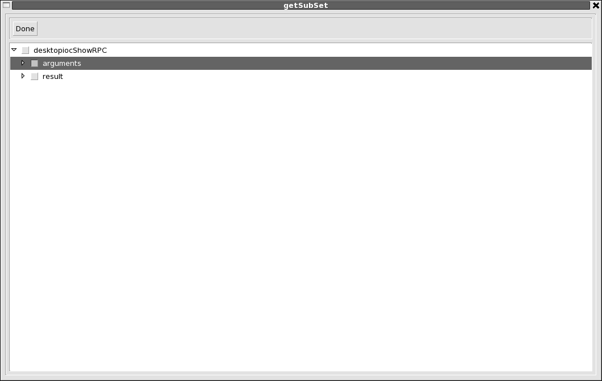
Then result is selected from the createGetRequest window.
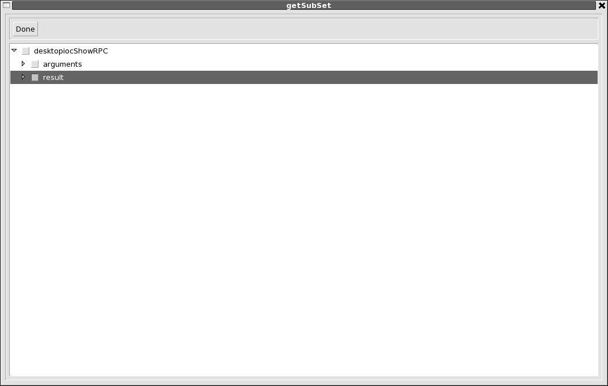
The following shows an example result.
The following window appears when the channelRPC button is pushed. A channelRPC returns a new PVStructure for each request. The record must support a channelRPC request.
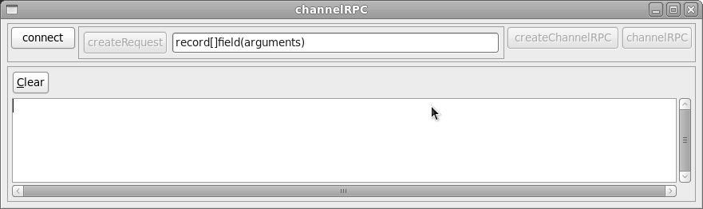
The following window appears when the array button is pushed:
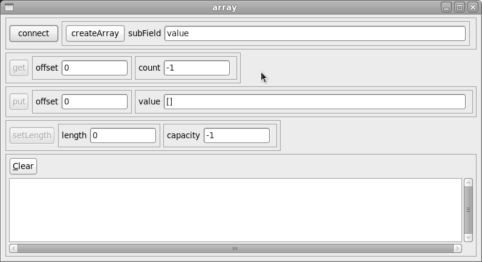
This window has a connect/disconnect button and a createArray/destroyArray button. It has a text entry for subField. The get button issues a array get request. The offset and count can be specified. The result is written into the value field of the put row. The put button issues a put array request. The offset can be specified. The value field provides the array values. The setLength button is used to set the length and/or capacity of the array. A value of -1 means leave as is.
This is used to get and modify elements of a PVStructureArray. You must get before issuing a put. The puts will modify the data obtained via the get and then put the data back.
The following window appears when the structureArray button is pushed:
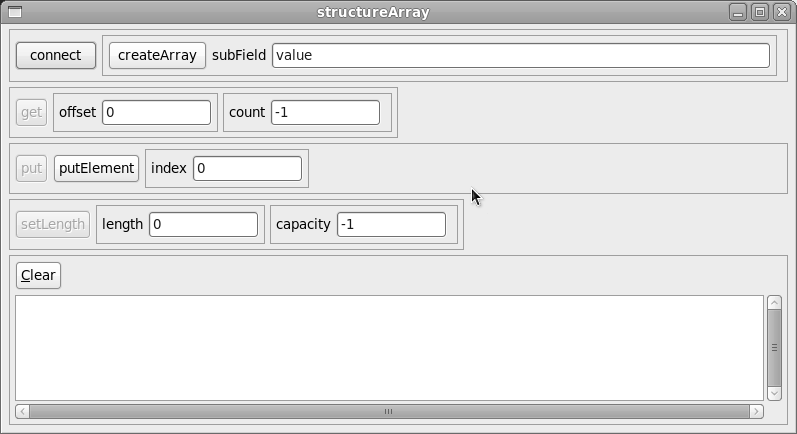
This window has a connect/disconnect button and a createArray/destroyArray button. It has a text entry for subField. The get button issues a array get request. The offset and count can be specified. The result is written to the consoleText window. You must issue a get before using put.
The put row acts on the data received from a put. You change elements by giving a value to index and clicking putElement. A tree structured window just like for put appears. This is changing the local data. When you click put the data is written to the actual record. The setLength button is used to set the length and/or capacity of the array. A value of -1 means leave as is.
The following window appears when the monitor button is pushed:
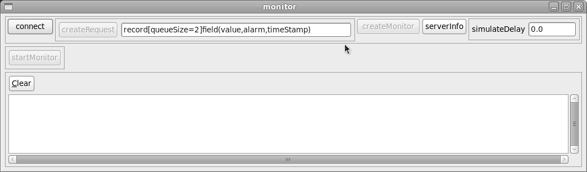
The controls in the first row are similat to get and put. Note that the queueSize can be set.
The other controls provide:
The following window appears when the loadDatabase button is pushed:
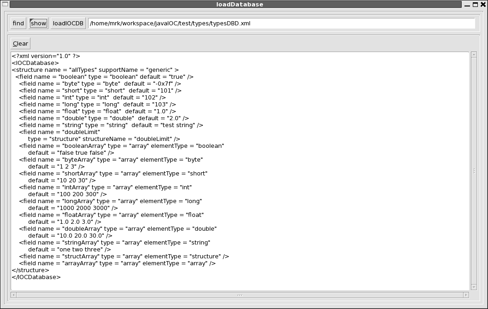
This is used to load additional IOCDB definitions to a running IOC. It has the following controls:
The following window appears when the introspectDatabase button is pushed:

The top menubar allows the use to see all the structure definitions in the master database.
The next three row allows the user to select and interact with a local record. The select button is used to select a local record. The text window after select shows the currently selected record and can also be used to enter a record name. The remaining buttons apply to the selected button. They are:
The third row has two buttons that show information. They are:
The following window appears when the portDriver button is pushed:

The first row has buttons to select a port and a device. The other rows are for setting trace options and for connect and enable commands.
The following window appears when the iocConsole button is pushed:

When this is started, it calls iocdb.addRequester where iocdb is the master IOCDB. Whenever any code sends a message to the iocdb, the message is displayed on the iocConsole window. Note that iocdb puts the messages on a queue and has a separate thead that send the messages to the requesters.